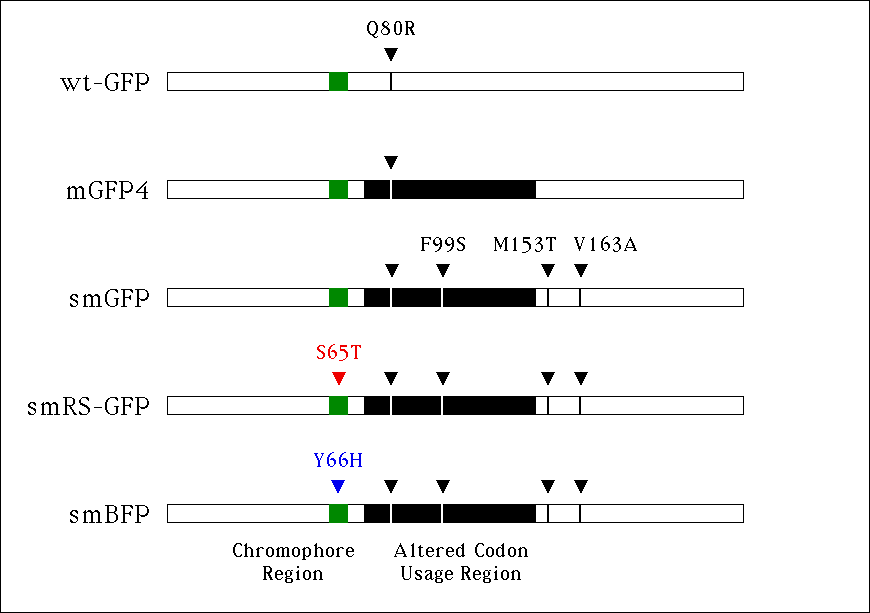

| Figure 1 |
|---|
|  |
| Structures of soluble-modified GFP reporter constructions, and differences compared to the wild-type GFP and the modified mGFP4. By site-directed mutagenesis of mGFP4, three codon substitutions (F99S, M153T, and V163A) were made to create smGFP. From smGFP, codons for chromophore amino acids were substituted leading to smRS-GFP (S65T mutation), and smBFP (Y66H mutation). |